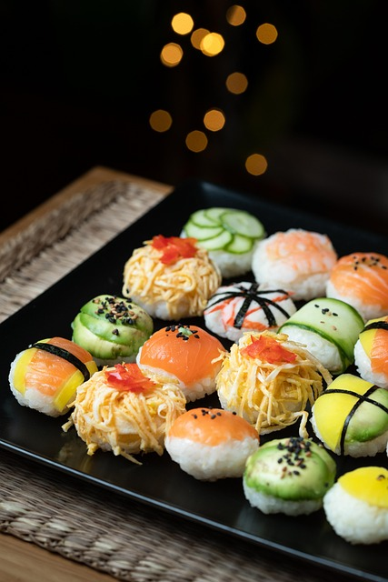
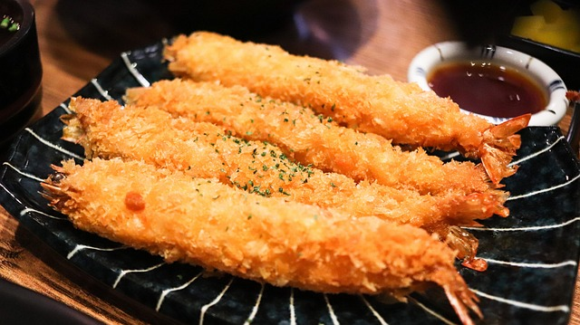

COMIDAS INTERNACIONALES
GASTRONOMIA JAPONESA

En esta página encontrarás información sobre las deliciosas comidas japonesas, incluyendo recetas de diferentes partes de Japón y la historia de cada receta.
RECETAS JAPONESAS
SUSHI
El sushi es uno de los platos más reconocidos de Japón. Consiste en arroz aderezado con vinagre, combinado con pescado fresco o mariscos, vegetales y otros ingredientes. Su origen se remonta al siglo VII en el sureste de Asia y ha evolucionado a lo largo de los años, adquiriendo diferentes estilos y presentaciones. Para preparar sushi, se necesita habilidad y precisión en el corte del pescado, así como una correcta proporción de arroz y aderezos. Hay varios tipos de sushi, como el nigiri (pescado sobre arroz), maki (rollo envuelto en alga marina) y sashimi (pescado crudo sin arroz).
RAMEN

El ramen es un plato de fideos japoneses servidos en un caldo aromático, acompañados de carne, mariscos, verduras y otros ingredientes. Su origen se encuentra en China, pero se ha convertido en un plato muy popular en Japón. Cada región de Japón tiene su propio estilo de ramen, con diferentes tipos de caldo y toppings. El ramen se sirve en tazones grandes y se consume caliente. Los fideos pueden ser finos o gruesos, y el caldo puede ser a base de carne, pollo, cerdo o mariscos. Algunos de los ingredientes comunes en el ramen incluyen los brotes de bambú, los huevos marinados, la carne de cerdo al estilo cha siu y las algas nori.
TEMPURA
La tempura es un plato japonés que consiste en alimentos fritos recubiertos de una masa ligera y crujiente. Los ingredientes más comunes para la tempura son los mariscos y las verduras, como los camarones, calamares, pimientos y calabacines. La tempura se sirve caliente y se acompaña con salsa de sumiso o sal. Los alimentos se sumergen en una mezcla de harina, agua y huevo, y luego se fríen en aceite vegetal hasta obtener un dorado ligero y crujiente. La tempura se disfruta como plato principal o como acompañamiento en diferentes comidas japonesas.